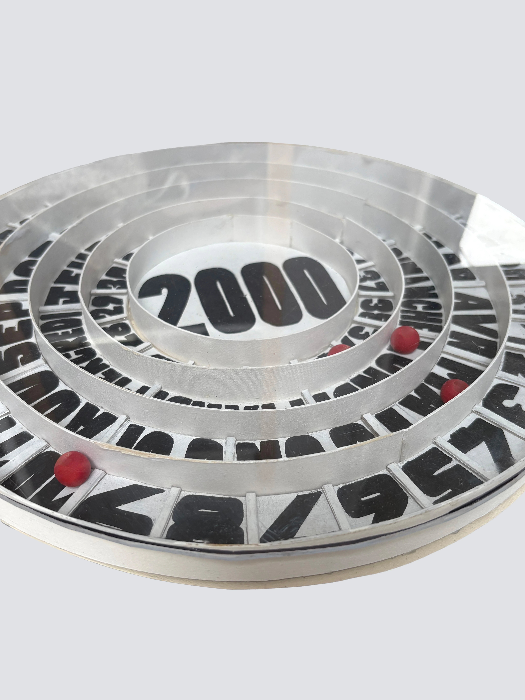
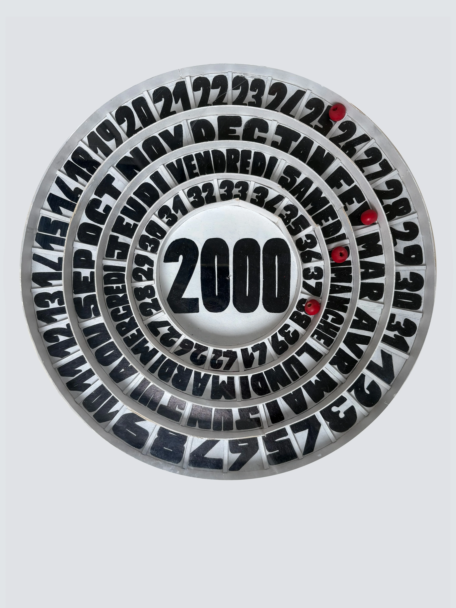
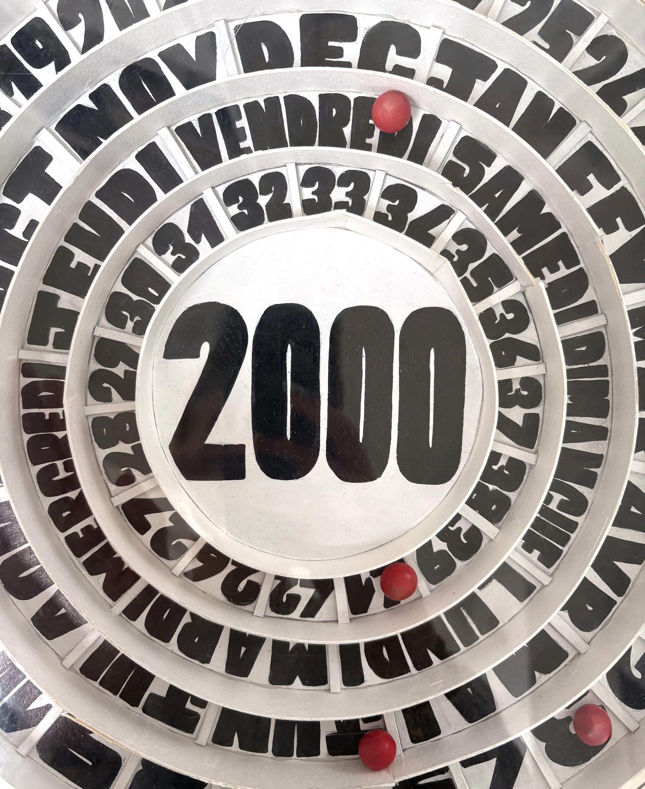

Calendrier perpetuel
Objet en volume



Entre le hasard des jeux de casino et la précision du temps, ce calendrier perpétuel se pense comme un jeu. Quatre billes, à déplacer avec justesse, matérialisent le passage des jours et transforment la lecture du temps en expérience ludique. Le but est simple : trouver la bonne place, dompter le hasard et inscrire chaque date avec précision.